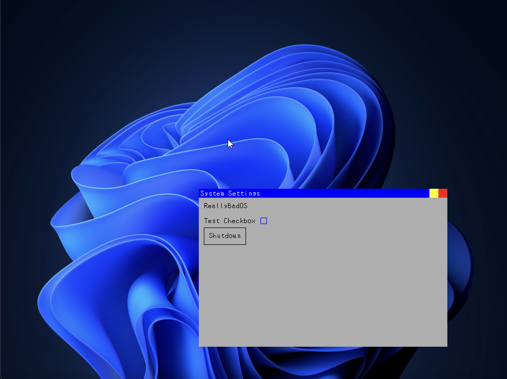

OSDev
ReallyBadOS (RBOS)
Hobbyist x86 operating system
My operating system that is currently a work-in-progress.No release available (yet).
Building
To build:1. add the usr/apps (the full path from root) folder to path
2. simply run make all.
Required tools: i686-elf-g++ i686-elf-as i686-elf-nm nasm grub-mkrescue
Screenshots
ReallyBadFileSystem (RBFS)
A filesystem that is worse than any other yet.Accurate descriptions:
- Mission-critical unreliability
- Slow
- Plain-test
- Memory-intensive
- no data-corruption-prevention measures
- Not easy to implement
- None of tons of features that other filesystems have